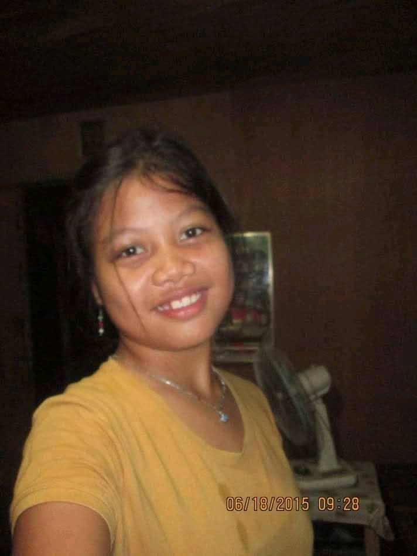
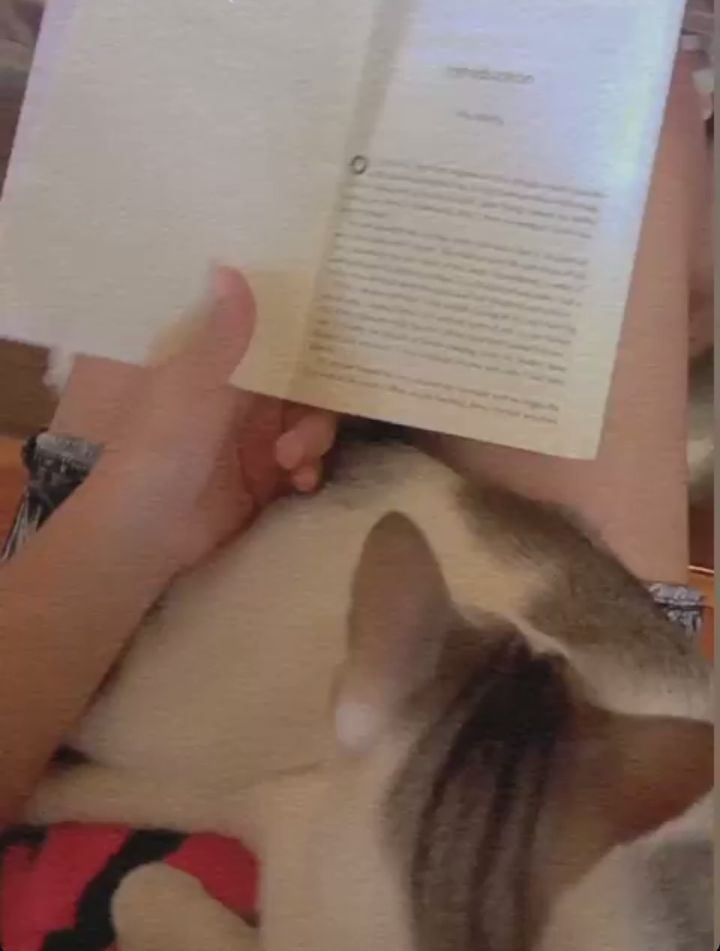
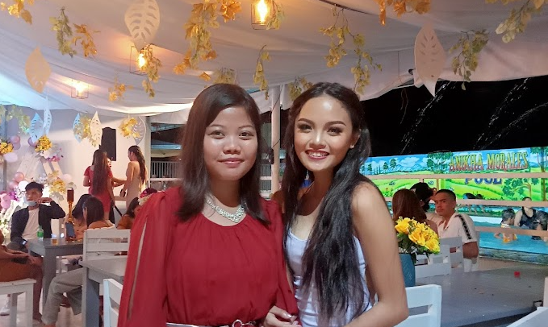

Introduction
Welcome to the story of my life. This is a journey through my thoughts, experiences, and aspirations.
About Me
Hi, this is Reina Joyce P. Suazo, I am a BSIT student, a determined and focused individual who values personal growth.I am a thoughtful and fair person who values order and independence. I prefer deep connections over small talk and sometimes need space when feeling overwhelmed. Creativity is a big part of me I love art and storytelling, and I like things to be clear and organized. I may be quiet, but I am determined and strong, always pushing myself to do better. While I enjoy being independent, I also appreciate kindness and honesty in others, and I deeply respect wise and genuine people.
My Life Story
Childhood: Growing up, I experienced challenges that shaped me into who I am today. This is me when I was 6yrs.old with my favorite toy I named Paopao.
Teenage Years: This is me when I was 13. Enjoying life, no problems, no task, no title proposal.arghh.

Adulthood: Adulthood is a journey of embracing growth and responsibility. KAPOY.This is my pictorial in Senior High.
My Lifestyle
Living a balanced and purposeful life is what I strive for every day.
Hobbies
These activities bring me joy and allow me to express my creativity.

Favorites
Food: Lobster
Color: Blue

PPOP Group: Bini
Circle of Friends
My close friends are my greatest supporters, standing by me through thick and thin.My friends are supportive, kind, and reliable. They respect my independence and understand my quiet nature. They appreciate my honesty and fairness, valuing the way I think deeply about things. Some push me to step out of my comfort zone, while others offer comfort and stability when I need it most. They know that I sometimes need space, but they remain patient and accepting. My friends are not just companions they encourage my growth, share my passions, and stand by me through life’s ups and downs
College Friends: IT Sibs (Hurry Kim from left, next to him is Ashmen our bunso, and in the right side is Honey)
Senior Highschool Friends: Humanista (Trixia Lee from left, next to her is Lj, and in the right side who took the picture is April)
Junior Highschool Friends: TRIO (Jan Azile pursuing his Architecture dream, and I-K,c now pursuing her MedTech dreams.)
Childhood Friend: Me and Cristine

Travel
Exploring the beauty of earth is one of my greatest passions, shaping my perspective and enriching my life. This is my 2nd time travel in Cebu.